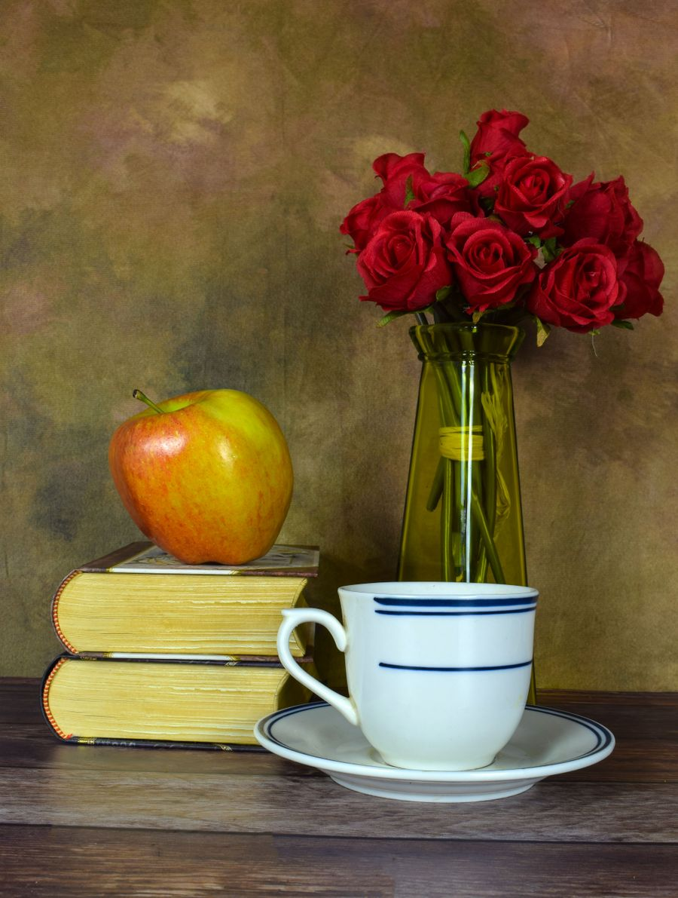

你不知道的德国 · 48
🎓 Bildung 不是「培训」
德国教育理念的四个关键词
Bildung · Neugier · didaktische Prinzipien · 不催
🎓 Bildung ≠ Ausbildung：德语特有的一个分岔
德语里「教育」不是一个词，是三个：Erziehung（管教——有意图地影响一个人的成长，目标是 Mündigkeit「成熟自主」）、Bildung（自我塑造，既是过程也是结果）、Ausbildung（为某个职业做的专门培养）。三者的分工，是德语教育话语的地基。
Bildung 这个词很难译。Humboldt 在 1793/94 年写下的那句是：人真正的目的是「die höchste und proportionirlichste Bildung seiner Kräfte zu einem Ganzen」——把自己各种力量最高度、最均衡地养成一个整体。而自由是它「第一且不可缺的条件」。
这套理想后来凝成三个大学习惯用语：Bildung durch Wissenschaft（通过科学而教化）、Einheit von Forschung und Lehre（研究与教学统一）、Einsamkeit und Freiheit（在孤独与自由中研究）。⚠️ 说清楚：这三句是后人的概括公式，不是洪堡的逐字原话。
还有一件更该说的：洪堡不是现代德国学校制度的设计者。他只在 1809–1810 年主管过很短一段时间，详细的改革方案并没留下来；继任者 1819 年的学制总法草案失败，普鲁士随即进入复辟时期。把他追认成「文理中学之父」，是过度了。
💡 一句好记的对比（教育学者 Bude 的说法）：Bildung 比 Ausbildung 更深刻，比 Erziehung 更持久，比 Lernen 更多样。
🇩🇪 Auf Deutsch
Im Deutschen gibt es drei Wörter: Erziehung (absichtsvolle Einflussnahme), Bildung (Selbstbildung — Prozess und Ergebnis zugleich) und Ausbildung (berufsbezogene Qualifizierung). Humboldts Ideal war die Bildung: „die höchste und proportionirlichste Bildung seiner Kräfte zu einem Ganzen“. Die Formeln „Bildung durch Wissenschaft“ und „Einheit von Forschung und Lehre“ sind allerdings spätere Zusammenfassungen, keine wörtlichen Zitate.
🔍 好奇心是被「制度」保护的，不是靠口号
德国最反直觉的一条：幼儿园不属于学校系统。它归青少年福利（Kinder- und Jugendhilfe），没有强制入园，而且不教读写算术。3–6 岁的孩子约九成会去，但那是家长自愿选择。
这套做法能追到 Fröbel：他 1837 年在 Blankenburg 办起幼儿机构，1840 年取名「Kindergarten」；《人的教育》(1826) 里那句常被引用的话是——„Spielen, Spiel ist die höchste Stufe der Kindesentwicklung“（游戏是儿童发展的最高阶段）。⚠️ 中文转载常写成 höchste Form，原文是 Stufe。
更硬的是宪法：《基本法》第 7 条第 6 款——„Vorschulen bleiben aufgehoben.“（先修学校一律废止。）⚠️ 这不是「禁止早期教育」：它针对的是魏玛时期被打掉的那种收费私立预备学校（专门为进文理中学铺路、维护上层优势），由 1920 年的帝国法律落实。中文网络常把它误读成「德国宪法禁止幼儿园教东西」——那是错的。
真正代表官方态度的是 KMK 2015 年那份小学建议里的句子：„Kinder stellen Fragen; sie sind neugierig, wollen Neues lernen und Bedeutsames leisten.“（孩子会提问；他们好奇，想学新东西，想做有意义的事。）
💡 幼教框架是「各州自己一套」：16 个州 16 份方案（名字从 Bildungs- und Erziehungsplan 到 Orientierungsplan、Bildungsprogramm 各不相同，篇幅 33 页到 500 页都有）。全国只有一份 2004 年 KMK 与青少年部长会议的共同框架——而且它没有法律约束力。
🇩🇪 Auf Deutsch
Der Kindergarten gehört in Deutschland nicht zum Schulsystem, sondern zur Kinder- und Jugendhilfe — es gibt keine Kindergartenpflicht, und Lesen, Schreiben und Rechnen werden dort nicht systematisch unterrichtet. Artikel 7 Absatz 6 des Grundgesetzes lautet: „Vorschulen bleiben aufgehoben.“ Damit sind die historischen privaten Vorschulen gemeint, nicht die frühkindliche Bildung.
📐 「循序渐进」不是口号，是教学论里的一条条原则
「由易到难、由近及远」在德国教学论里是成体系的，而且出处很清楚。最早把它写下来的是 Comenius 的《大教学论》（17 世纪）：„Die Natur schreitet vom Leichteren zum Schwereren vor.“（自然是从较易走向较难。）
把这类原则整理成德国教师手册的是 Diesterweg（1835《德国教师培养指南》）：Anschaulichkeit（直观性）、Selbsttätigkeit（自我活动）、vom Nahen zum Fernen（由近及远）、vom Einfachen zum Komplexen（由简到繁）、vom Bekannten zum Unbekannten（由已知到未知）。
再往后是 Herbart 的形式阶段，经 Ziller、Wilhelm Rein 定成流传最广的五步：Vorbereitung → Darbietung → Verknüpfung → Zusammenfassung → Anwendung（预备 → 呈现 → 联结 → 总结 → 应用）。20 世纪中叶以前，这是德国师范训练的标准套路。
⚠️ 两件事必须说清：① 这些原则不是德国独有——Comenius 是捷克人，这套东西是全欧洲（乃至英美）共有的，德国的贡献是 Diesterweg 的系统化和 Herbart 一派的阶段论；② 并不存在一份官方定死的「教学原则清单」——各路教法专家的版本从 8 条到 12 条都有。
💡 今天德国课堂里对应的是这些词：Forschendes Lernen（探究式学习）、Lernwerkstatt（学习车间）、Wochenplanarbeit（周计划学习）、Freiarbeit（自由学习）、Stationenlernen（站点学习）。
🇩🇪 Auf Deutsch
Viele didaktische Prinzipien sind älter als die deutsche Schulgeschichte: „Die Natur schreitet vom Leichteren zum Schwereren vor“ steht schon bei Comenius. Diesterweg systematisierte sie 1835 (Anschaulichkeit, Selbsttätigkeit, vom Nahen zum Fernen), und die Formalstufen von Herbart, Ziller und Rein (Vorbereitung – Darbietung – Verknüpfung – Zusammenfassung – Anwendung) prägten lange die Lehrerausbildung. Eine offizielle verbindliche Liste solcher Prinzipien gibt es aber nicht.
⏳ 「不催」是一条制度链——但理念不等于课堂
「不催」在德国不是一句口号，是一条制度链：
① 入学阶段全国都不统计留级——联邦统计局的原文是「1、2 年级原则上不记录留级生」。② 柏林和勃兰登堡的小学 1、2 年级不给分数，只出一份书面的学习发展报告；官方给的理由是：这个年龄的孩子有天然的学习乐趣，一上来就「为分数而学」，兴趣会被磨掉。③ 多个州把家庭作业换成校内的 Lernzeiten（学习时段）——下萨克森明令作业不得打分、小学每天约 30 分钟、周五到周一不留；石荷州的 Nortorf 小学 2025 年干脆取消了传统作业。
同样是这套「国家在家庭这头搭一把手」的思路：从 2026 年 8 月 1 日起，德国一年级孩子还多了一项全天看护的法定权利——工作日最多 8 小时（含上课时间）、假期也照常；联邦出约 35 亿欧元、各州落地。
📰 德语新闻 · 第 4 期：一年级有了「全天看护」的法定权利（德 A1–B2 · 英 A2–B2）→
但别把它想成天堂。最有说服力的反差数据在这里：IGLU 2006 的研究里，超过 80% 的德国小学教师说自己的阅读课基本还是老师讲（frontal）；让学生参与选题的教师不到 5%。也就是说——理念写得很漂亮，课堂上是另一回事。
💡 留级率也确实在降：全国从 2002/03 的 3.0% 降到 2024/25 的 2.2%。但各州差得远——巴伐利亚 3.4%，柏林只有 0.8%。
🇩🇪 Auf Deutsch
Die Klassenstufen 1 und 2 werden in Deutschland generell nicht als Wiederholer gezählt. In Berlin und Brandenburg gibt es in den Klassen 1 und 2 keine Noten, sondern einen Lernentwicklungsbericht; mehrere Länder haben Hausaufgaben durch schulische Lernzeiten ersetzt. Zugleich zeigt die IGLU-Studie 2006, dass über 80 Prozent der Grundschullehrkräfte ihren Leseunterricht als überwiegend lehrergesteuert beschreiben — das Ideal und der Alltag klaffen auseinander.
📖 想读更多德国冷知识？
48 期「你不知道的德国」深度专栏，都在 Leon 德语学习中心。
📚 进入网站